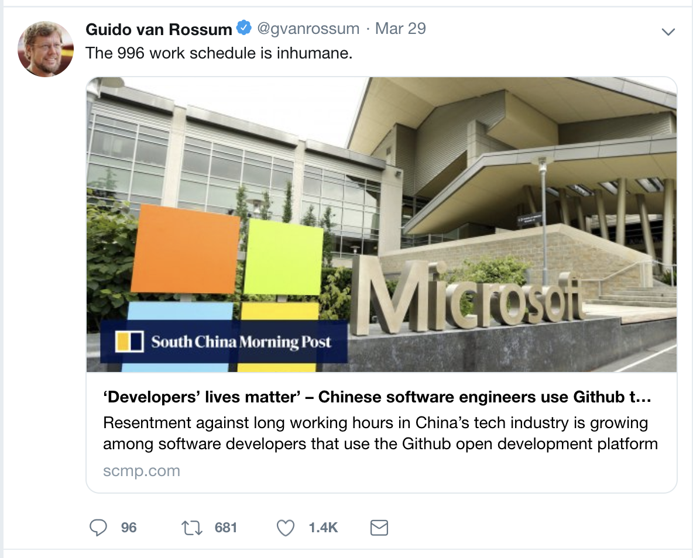

最近，github 有一个项目很火，相信大家都或多或少听过过了，叫做 996.icu。
这是一个由某个程序员发起，众多程序员、准程序员们支持的一个反对 9 点上班，晚上 9 点下班的，工作 6 天的一种工作方式。
仅仅一周时间，这个项目的 star 已经高达 15w 了，位居 github 第二。
996 工作制度的诞生，实际上远远早于很多人的想象，但是这个词的火起来，也就是近两年。
在大家对生活越来越重视、对家庭越来越关心的现在，反对 996 的声音只会越来越大。
996 有多么没有人性
在 996.icu 项目刚开始传播的时候，python 老爹 Guido van Rossum 就在推特发表了看法：

996 是有多没有人性呢？
号称 996 工作，有多少人是能够按时上下班呢？即使你能够按时上下班，上下班花去 1 小时，留给你的时间，仅仅只有 11 个小时，除掉睡觉的 8 小时，你的空闲，只有 3 小时。
有多少人能够半小时赶到公司？北上广深的码农朋友，扪心自问，单程半小时理想么？单程 1h 的朋友数不胜数！
3 个小时，我亲爱的朋友，你哪里还有生活，你是在搏命。
早上 9 点到晚上 9 天，天没亮就起床，晚上离开公司，已经黑夜了。你从来没有见过工作日这个城市白天的美、白天的悠闲。
你的生活，堆积了无数的工作和排期。
你的生活，也只是为了活。
奋斗者最后的遮羞布
无论在哪里，微博还是知乎，都见过太多把 996 当作是自身努力的象征了。
他们丝毫没有察觉这是对他们自己的压榨，他们把自己和公司绑在了一起，以为自己的 996，可以换来公司更多的资源。
实际上呢？大家都是羊而已，除了被薅，就只能“咩咩咩”叫罢了。
更有甚者，连无补偿辞退了都不知道找法律援助，还在自我安慰我是为公司牺牲的。
对这种精神股东，只能报以不歧视智障的心态来看待。
去年年底到今年年初，多少互联网公司宣布裁员，大浪潮下，你的 996 真的像笑话一样刺激每一个人。
你的“奋斗”最终换来公司的扫地出门。
你，真的没有考虑过自己应有的权益？
你总是说，你在公司多呆一会，可以学习更多。但是你考虑过没有，因为 996 你的工作效率到底下降了多少？
你总是上午一直开会，下午撕逼，你的工作时间在哪？
你已经忘记了如何挤压时间，你总是把工作放到了晚上，你总是在各个业务之间徘徊。
你自我学习的时间还有吗？
我的朋友，你已经陷入了工作提升自己的陷阱里面了。
你使用着陈年技术，你已经看不到行业领先的东西了，你的奋斗只是一个笑话。
朋友，千万不要用你的经验做同一件事。
压垮你的最后稻草
最近，有一个视频引起了大家的共鸣。
视频里是一个给女友送钥匙骑自行逆行的青年，在被交警拦下，打了一通冷静的电话之后，突然爆发。
他摔了手机，嚎啕大哭，哭声里是无尽的委屈。
不知道压抑了多久的情感在这一刻完全释放。
他无语轮次的讲述加班、工作、他不干了、他累。
交警只能安慰，最后说：生活大家都一样，都是负重前行。
他的爆发像一把刀子一样插入观众的心，为何我们已经成为这样，完全的成为生活的奴隶。
我们，就不能过一个工作、生活平衡的日子吗？
你的 996 一点都不值钱
你的 996 除了能让你的老板明年可以买上豪车之外，毫无作用。
因为你的 996 毫不值钱！
留点时间给你的老婆，你的孩子。
你需要出去看看初春的花朵、取感受感受春天的芬芳。
工作，只能是工作。